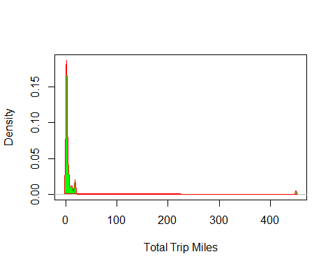
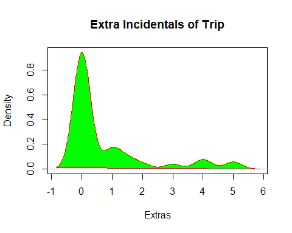
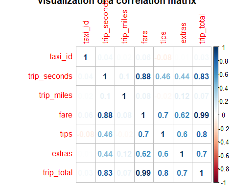
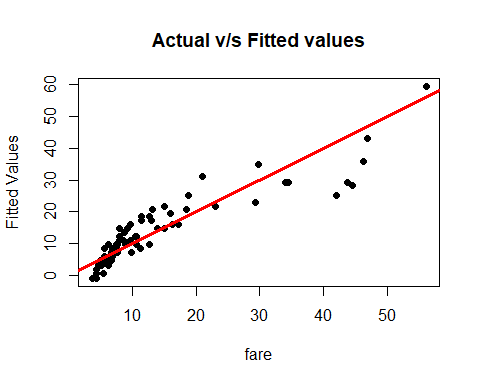
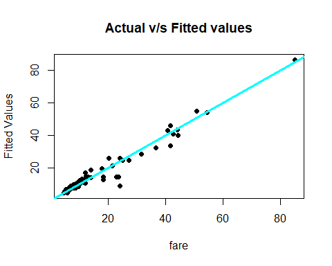

FinalProject.R
Mukund Kathait
2019-10-20
rm(list=ls())
library(rio)
library(car)
## Loading required package: carData
library(rio)
library(moments)
library(corrplot)
## corrplot 0.84 loaded
## Loading required package: carData
#PreProcessing
#1 Reading
in CSV Data
cab_trips=read.csv(file="6304 Regression
Project Data.csv", header=TRUE, sep=",")
colnames(cab_trips)=tolower(make.names(colnames(cab_trips)))
attach(cab_trips)
#2
set.seed(27683820)
my.cabInfo =cab_trips[sample(1:nrow(cab_trips),100,replace=FALSE),]
summary(my.cabInfo)
## taxi_id trip_seconds trip_miles
fare
## Min. : 4 Min. : 0 Min. : 0.00 Min. : 3.250
## 1st Qu.:1767 1st Qu.: 240 1st Qu.: 0.00 1st Qu.: 5.750
## Median :4364 Median : 480 Median : 0.95 Median : 8.025
## Mean :4173 Mean : 681 Mean : 7.22 Mean :13.504
## 3rd Qu.:6354 3rd Qu.: 855 3rd Qu.: 3.00 3rd Qu.:15.062
## Max. :8696 Max. :4680 Max. :450.00 Max. :56.000
## tips tolls extras trip_total
## Min. : 0.00 Min. :0 Min. :0.000 Min. : 3.250
## 1st Qu.: 0.00 1st Qu.:0 1st Qu.:0.000 1st Qu.: 6.250
## Median : 0.00 Median :0 Median :0.000 Median : 9.125
## Mean : 1.66 Mean :0 Mean :0.705 Mean :15.869
## 3rd Qu.: 2.00 3rd Qu.:0 3rd Qu.:1.000 3rd Qu.:18.863
## Max. :10.15 Max. :0 Max. :6.000 Max. :60.900
## payment_type
## Cash :50
## Credit Card:50
## Other : 0
##
##
##
attach(my.cabInfo)
## The following objects are masked from cab_trips:
##
## extras, fare, payment_type, taxi_id, tips, tolls,
trip_miles,
## trip_seconds, trip_total
#3
#There
are a few records wherein trip_seconds is 0 and trip_fair is some positive
value.
#This
is a case of INCORRECT DATA or missing value, since if the trip_seconds are 0,
#ideally
there shouldn't be any fare. So cleaning those values
my.cabInfo = subset(my.cabInfo, my.cabInfo$trip_seconds
> 0 ,select = c("taxi_id","trip_seconds","trip_miles","fare","tips","extras","trip_total","payment_type"))
#Also
there are few instances wherein the trip_miles is 0 but trip fair is again some
positive value.
#This
is also a case of missing or Incorrect Data, since if the miles covered is 0,
#then
the fare should also be 0
sample_cabdata = subset(my.cabInfo, my.cabInfo$trip_miles
> 0,select = c("taxi_id","trip_seconds","trip_miles","fare","tips","extras","trip_total","payment_type"))
#Finally
after removing incorrect entries, we are left with 73 observations
summary(sample_cabdata)
## taxi_id trip_seconds trip_miles
fare
## Min. : 4 Min. : 60.0 Min. : 0.100 Min. :
3.75
## 1st Qu.:1488 1st Qu.: 360.0 1st Qu.: 0.800 1st Qu.:
6.25
## Median :4362 Median : 540.0 Median : 1.600 Median :
8.75
## Mean :4033 Mean : 765.2 Mean : 9.889 Mean
:13.55
## 3rd Qu.:6207 3rd Qu.: 960.0 3rd Qu.: 4.400 3rd
Qu.:15.00
## Max. :8696 Max. :4680.0 Max. :450.000 Max.
:56.00
## tips extras trip_total
payment_type
## Min. : 0.000 Min. :0.0000 Min. : 4.45 Cash
:34
## 1st Qu.: 0.000 1st Qu.:0.0000 1st Qu.: 7.50 Credit
Card:39
## Median : 1.000 Median :0.0000 Median : 9.75 Other :
0
## Mean : 1.895 Mean :0.7603 Mean
:16.21
## 3rd Qu.: 2.500 3rd Qu.:1.0000 3rd
Qu.:18.75
## Max. :10.150 Max. :5.0000 Max. :60.90
#ANALYSIS
#1
d1 <- density(sample_cabdata$trip_seconds)
plot(d1, main="Total Time of
Trip in Seconds", xlab="Time in Seconds")
polygon(d1, col="green", border="red")

#From the density plot we can say that most of the records lie between
60-2000 seconds
#and
some lie in the vicinity of 4800 seconds
boxplot(sample_cabdata$trip_seconds,col="red",main="Boxplot for
trip_seconds",xlab = "Time in
Seconds")
min(sample_cabdata$trip_seconds)
## [1] 60
max(sample_cabdata$trip_seconds)
## [1] 4680
median(sample_cabdata$trip_seconds)
## [1] 540
skewness(sample_cabdata$trip_seconds)
## [1] 3.053151
summary(sample_cabdata$trip_seconds)
## Min. 1st Qu. Median Mean 3rd Qu. Max.
## 60.0 360.0 540.0 765.2 960.0 4680.0
#As we can see in the box plot for seconds
#the
minimum is at 60 seconds and the maximum value(which is an outlier) is 4680
seconds
#the
median is 540 seconds and we have 4 outliers
#From
the skewness we can see that the plot is right skewed with high skewness
########################
d2 <- density(sample_cabdata$trip_miles)
plot(d2, main="Boxplot for
Total Trip in Miles", xlab = 'Total Trip Miles')
polygon(d2, col="green", border="red",xlab = "Miles
Travelled")

#From the density plot we can see that most of the values are between
0.1 and 9.889
#and a
few values are scattered between 0.100 to somewhere around 10
boxplot(sample_cabdata$trip_miles,col="red",main="Boxplot for
trip_miles",xlab = "Total Miles
Travelled")

min(sample_cabdata$trip_miles)
## [1] 0.1
max(sample_cabdata$trip_miles)
## [1] 450
median(sample_cabdata$trip_miles)
## [1] 1.6
skewness(sample_cabdata$trip_miles)
## [1] 8.258317
summary(sample_cabdata$trip_miles)
## Min. 1st Qu. Median Mean 3rd Qu. Max.
## 0.100 0.800 1.600 9.889 4.400 450.000
#For the trip_miles boxplot,
#the
minimum value is 0.1 mile and the maxmium value(which is an outlier) is 450
miles
#and
the median is 1.6 miles. As shown in the boxplot, we have multiple outliers
#around
6-7
#The
skewness for trip_miles is 8.25 which indicates that it is highly skewed to the
right
###########################################
d3 <- density(sample_cabdata$fare)
plot(d3, main="Total Fare of
the Trip",xlab = "Total
Fare")
polygon(d3, col="green", border="red")

boxplot(sample_cabdata$fare,col="red",main="Boxplot for Fare",xlab = "Total Fare")
#From the density plot we can see that most values are between 3.75 to
20 and some are scattered from 20 to 60
min(sample_cabdata$fare)
## [1] 3.75
max(sample_cabdata$fare)
## [1] 56
median(sample_cabdata$fare)
## [1] 8.75
skewness(sample_cabdata$fare)
## [1] 1.9303
summary(sample_cabdata$fare)
## Min. 1st Qu. Median Mean 3rd Qu. Max.
## 3.75 6.25 8.75 13.55 15.00 56.00
#For the fare boxplot,
#the
minimum value is 3.75 and the maxmium value(which is an outlier) is 56
#and
the median is 8.75. As shown in the boxplot, we have multiple outliers
#around
10
#The
skewness for fare is 1.9303 which indicated that it is skewed to the right
###########################################
d4 <- density(sample_cabdata$tips)
plot(d4, main="Tip for the
Trip",xlab = "Tips")
polygon(d4, col="green", border="red")

#From the density plot we can see that most of the values are between 0
to 5 and a few are between 5 to 10
boxplot(sample_cabdata$tips,col="red",main="Boxplot for
Tips", xlab = "Tips")
min(sample_cabdata$tips)
## [1] 0
max(sample_cabdata$tips)
## [1] 10.15
median(sample_cabdata$tips)
## [1] 1
skewness(sample_cabdata$tips)
## [1] 1.75484
summary(sample_cabdata$tips)
## Min. 1st Qu. Median Mean 3rd Qu. Max.
## 0.000 0.000 1.000 1.895 2.500 10.150
#For the tips boxplot,
#the
minimum value(and the 1st quartile which overlap) is 0 and the maxmium
value(which is an outlier) is 10.15
#and
the median is 1. As shown in the boxplot, we have multiple outliers
#around
7
#The
skewness for tips is 1.75484, which is high and from the plot we can say that
it is right skewed
###########################################
d5 <- density(sample_cabdata$extras)
plot(d5, main="Extra
Incidentals of Trip",xlab = "Extras")
polygon(d5, col="green", border="red")

#From the plot we can see that most of the values are between 0 to 1
and rest are scattered beyond 2 till 6
boxplot(sample_cabdata$extras,col="red",main="Boxplot for
Extras",xlab = "Extras")
min(sample_cabdata$extras)
## [1] 0
max(sample_cabdata$extras)
## [1] 5
median(sample_cabdata$extras)
## [1] 0
skewness(sample_cabdata$extras)
## [1] 1.912984
summary(sample_cabdata$extras)
## Min. 1st Qu. Median Mean 3rd Qu. Max.
## 0.0000 0.0000 0.0000 0.7603 1.0000 5.0000
#For the extras boxplot,
#the
minimum value(and the 1st quartile and also the median which overlap) is 0 and
the maxmium
#value(which
is an outlier) is 5 #and the median is 0. As shown in the boxplot, we have
multiple outliers
#around
3
#The
skewness for extras is 1.912984, and from the plot we can say that it is right
skewed
###########################################
d6 <- density(sample_cabdata$trip_total)
plot(d6, main="Final Amount of
Trip",xlab = "Trip Total
Amount")
polygon(d6, col="green", border="red")

#From the density plot, we can say that most of the values are between
4.45 to 20 while few other points
#are
from 20 to 60.90
boxplot(sample_cabdata$trip_total,col="red",main="Boxplot for
Total Amount",xlab = "Trip Total
Amount ")

min(sample_cabdata$trip_total)
## [1] 4.45
max(sample_cabdata$trip_total)
## [1] 60.9
median(sample_cabdata$trip_total)
## [1] 9.75
skewness(sample_cabdata$trip_total)
## [1] 1.894067
summary(sample_cabdata$trip_total)
## Min. 1st Qu. Median Mean 3rd Qu. Max.
## 4.45 7.50 9.75 16.21 18.75 60.90
#For the trip_total boxplot,
#the
minimum value is 4.45 and the maxmium value(which is an outlier) is 60.9
#and
the median is 9.75. As shown in the boxplot, we have multiple outliers
#around
9
#The
skewness for trips_total is 1.894067 and from the plot we can see that the plot
is right skewed
###########################################
#2
table(sample_cabdata$payment_type)
##
## Cash Credit Card Other
## 34 39 0
#The table method when used on payment_type, returns the total count of
"CASH",
#"CREDIT
CARD" and "OTHER" payments
#3
sample_data_correlation = cor(sample_cabdata[sapply(sample_cabdata,
is.numeric)])
sample_data_correlation
## taxi_id trip_seconds trip_miles
fare tips
## taxi_id 1.000000000 0.04186455 0.01519282 0.05853383
-0.07969568
## trip_seconds 0.041864550 1.00000000 0.09974792 0.88164974
0.45709667
## trip_miles 0.015192823 0.09974792 1.00000000 0.08116272
-0.02385927
## fare 0.058533825 0.88164974 0.08116272 1.00000000
0.69735729
## tips -0.079695676 0.45709667 -0.02385927 0.69735729
1.00000000
## extras 0.007082741 0.43519439 0.11554362 0.61932816
0.59780069
## trip_total 0.033265127 0.83061058 0.07160004 0.98608652
0.79576276
## extras trip_total
## taxi_id 0.007082741 0.03326513
## trip_seconds 0.435194385 0.83061058
## trip_miles 0.115543624 0.07160004
## fare 0.619328161 0.98608652
## tips 0.597800694 0.79576276
## extras 1.000000000 0.69804512
## trip_total 0.698045117 1.00000000
#The sample_data_correlation matrix shows the matrix of correlation.
#It
measure the linear relation and strength between two variables
#For
example the cor between trip_seconds and trip_miles is 0.0997. It is a positive
number
#it
mean that if trip_seconds increases, trip_miles also increases.
#Another
example as per the cor, the relation between tips and trip_miles is negative,
#it
means as the trip_miles increases the tips decreases or vice versa
#The best
correlation is between fare and trip_miles
#In
order to aid in better understanding of correlation, I have also shown a visual
plot
corrplot(sample_data_correlation,
method
= "number",title = "visualization
of a correlation matrix")

#4
lm_sample_cab = lm(formula = fare ~ trip_seconds
+ trip_miles
+ payment_type,
data
= sample_cabdata)
confint(lm_sample_cab,
level
= 0.95)
## 2.5 % 97.5 %
## (Intercept) -2.10607443 2.50346298
## trip_seconds 0.01325227 0.01718661
## trip_miles -0.02324120 0.02733108
## payment_typeCredit Card 0.49333928 5.81493280
summary(lm_sample_cab)
##
## Call:
## lm(formula = fare ~ trip_seconds + trip_miles + payment_type,
## data = sample_cabdata)
##
## Residuals:
## Min 1Q Median 3Q Max
## -15.4619 -2.8452 -0.7579 1.3970 18.5555
##
## Coefficients:
## Estimate Std. Error t value
Pr(>|t|)
## (Intercept) 0.1986943 1.1553041 0.172
0.8640
## trip_seconds 0.0152194 0.0009861 15.434
<2e-16 ***
## trip_miles 0.0020449 0.0126751 0.161
0.8723
## payment_typeCredit Card 3.1541360 1.3337692 2.365 0.0209
*
## ---
## Signif. codes: 0 '***' 0.001 '**' 0.01 '*' 0.05 '.' 0.1 ' ' 1
##
## Residual standard error: 5.572 on 69 degrees of freedom
## Multiple R-squared: 0.794, Adjusted R-squared: 0.7851
## F-statistic: 88.68 on 3 and 69 DF, p-value: < 2.2e-16
plot(sample_cabdata$fare,lm_sample_cab$fitted.values,pch=19,main="Actual v/s
Fitted values",
xlab = "fare", ylab = "Fitted
Values")
abline(0,1,col="red",lwd=3)

#This linear model was built using fare as the dependent variable and
trip_seconds, trip_miles, and payment_type
#as
dependent variables. Keeping the confience interval at 95%, we get the values,
the confidence interval values
#for
(Intercept) -2.10607443 to 2.50346298,
#for
trip_seconds 0.01325227 to 0.01718661,
#for
trip_miles -0.02324120 to 0.02733108 and
#for
payment_type 0.49333928 to 5.81493280
#The
equation for fare would be
#fare =
0.198694 + 0.0152194 * trip_seconds + 0.0020449 * trip_miles + 3.154136 *
payment_type
#for
every change in trip_seconds, the fare changes by 0.0152194, and its p value is
significantly small (<2e-16),
#hence
we reject the null hypothesis
#for
every change in trip_miles, the fare changes by 0.0020449, but its p value is
significantly large(0.8723),
#hence
we fail to reject the null hypothesis since there is not enough evidence
#for
every change in payment, the fare changes by 3.154136, and its p value is
significantly small (0.0209),
#hence
we reject the null hypothesis
#for
the intercept, if the miles and seconds travelled is 0, and payment is also 0, then
the total fare
#should
be 0.198694, which doesnt make any sense. Also its pvalue is significantly lare
(0.8640),
#hence
we fail to reject the null hypothesis since there is not enough evidence
#Also
the value for R-sq is 0.794 and Adj R-sq is 0.7851 which tells us the
percentage that the three independent
#variables
describe the dependent one.
#By
looking at the plot we can see that the points are clustered at the start, with
few outliers
#
#################################################
#5
#Creating
squared variables to use for generating linear model
sample_cabdata$miles_sq = 0
sample_cabdata$miles_sq = sample_cabdata$trip_miles^2
sample_cabdata$trip_seconds_sq = 0
sample_cabdata$trip_seconds_sq = sample_cabdata$trip_seconds^2
############
lm_sample_cab = lm(formula = fare ~ trip_seconds
+ trip_miles
+ payment_type,
data
= sample_cabdata)
summary(lm_sample_cab)
##
## Call:
## lm(formula = fare ~ trip_seconds + trip_miles + payment_type,
## data = sample_cabdata)
##
## Residuals:
## Min 1Q Median 3Q Max
## -15.4619 -2.8452 -0.7579 1.3970 18.5555
##
## Coefficients:
## Estimate Std. Error t value
Pr(>|t|)
## (Intercept) 0.1986943 1.1553041 0.172
0.8640
## trip_seconds 0.0152194 0.0009861 15.434
<2e-16 ***
## trip_miles 0.0020449 0.0126751 0.161
0.8723
## payment_typeCredit Card 3.1541360 1.3337692 2.365 0.0209
*
## ---
## Signif. codes: 0 '***' 0.001 '**' 0.01 '*' 0.05 '.' 0.1 ' ' 1
##
## Residual standard error: 5.572 on 69 degrees of freedom
## Multiple R-squared: 0.794, Adjusted R-squared: 0.7851
## F-statistic: 88.68 on 3 and 69 DF, p-value: < 2.2e-16
plot(sample_cabdata$fare,lm_sample_cab$fitted.values,pch=19,main="Actual v/s
Fitted values",
xlab = "fare", ylab = "Fitted
Values")
abline(0,1,col="red",lwd=3)
#This is the standard linear model considering all the dependent
variables(as explained in question number 4),
#the
equation for line here is
#fare =
0.198694 + 0.0152194 * trip_seconds + 0.0020449 * trip_miles + 3.154136 *
payment_type
#Removing Payment
lm_sample_cab_no_payment = lm(formula = fare ~ trip_seconds
+ trip_miles,
data
= sample_cabdata)
summary(lm_sample_cab_no_payment)
##
## Call:
## lm(formula = fare ~ trip_seconds + trip_miles, data =
sample_cabdata)
##
## Residuals:
## Min 1Q Median 3Q Max
## -18.6691 -2.5465 -0.7999 1.0105 19.7727
##
## Coefficients:
## Estimate Std. Error t value Pr(>|t|)
## (Intercept) 1.616472 1.019451 1.586 0.117
## trip_seconds 0.015615 0.001003 15.567 <2e-16 ***
## trip_miles -0.001569 0.012989 -0.121 0.904
## ---
## Signif. codes: 0 '***' 0.001 '**' 0.01 '*' 0.05 '.' 0.1 ' ' 1
##
## Residual standard error: 5.752 on 70 degrees of freedom
## Multiple R-squared: 0.7774, Adjusted R-squared: 0.771
## F-statistic: 122.2 on 2 and 70 DF, p-value: < 2.2e-16
plot(sample_cabdata$fare,lm_sample_cab_no_payment$fitted.values,pch=19,main="Actual v/s
Fitted values",
xlab = "fare", ylab = "Fitted
Values")
abline(0,1,col="red",lwd=3)
#Here we remove the payment record and build a linear model using only
trip_seconds and trip_miles
#the
equation of line is 1.616472 + 0.015615 * trip_seconds - 0.001569 * miles
#For
intercept the value is 1.616472. Its p value is 0.117 which is significantly
large. It means if we change
#the
trip_seconds and trip_miles to 0, the fare would be 1.61647 which isn't
correct. Hence judging for the p value,
#we
fail to reject the null hypothesis for the intercept
#In
case of trip_seconds, if the value for trip_seconds changes, the fare also
changes by 0.015615. Its p value
#is
2e-16 which is significanlty small and hence we reject the null hypothesis
#In
case of trip_miles, if the value for trip_miles changes, the fare also changes
by 0.001569. Its p value
#is
0.904 which is significanlty large and hence we fail to reject the null
hypothesis, due to lack of evidence
#The
value of R-sq is 0.7774 and for adj R-sq is 0.771 which is a good indicator for
how the independent
#variables
describe the dependent variable
##################################################
lm_sample_cab_no_miles = lm(formula = fare ~ trip_seconds
+ payment_type,
data
= sample_cabdata)
summary(lm_sample_cab_no_miles)
##
## Call:
## lm(formula = fare ~ trip_seconds + payment_type, data =
sample_cabdata)
##
## Residuals:
## Min 1Q Median 3Q Max
## -15.5333 -2.8542 -0.7538 1.3744 18.5390
##
## Coefficients:
## Estimate Std. Error t value
Pr(>|t|)
## (Intercept) 0.2184070 1.1408045 0.191
0.8487
## trip_seconds 0.0152382 0.0009723 15.672
<2e-16 ***
## payment_typeCredit Card 3.1281896 1.3147943 2.379 0.0201
*
## ---
## Signif. codes: 0 '***' 0.001 '**' 0.01 '*' 0.05 '.' 0.1 ' ' 1
##
## Residual standard error: 5.533 on 70 degrees of freedom
## Multiple R-squared: 0.794, Adjusted R-squared: 0.7881
## F-statistic: 134.9 on 2 and 70 DF, p-value: < 2.2e-16
plot(sample_cabdata$fare,lm_sample_cab_no_miles$fitted.values,pch=19,main="Actual v/s
Fitted values",
xlab = "fare", ylab = "Fitted
Values")
abline(0,1,col="red",lwd=3)
#If we do not consider the trip_miles, the equation for line that is
obtained is
#fare =
0.2184070 + 0.0152382 * trip_seconds + 3.1281896 * payment_type
# If
trip_seconds changes, the value for fare changes by 0.0152382. Its pvalue is
less than 2e-16, which is
#significantly
small. Hence we reject null hypothesis
#If
changes payment_type, the value for fare changes by 3.1281896. Its p value is
0.0201, which is significantly
#small.
Hence we rejet null hypothesis
#For
intercept, if both trip_seconds and payment_type is 0, the fare would be
0.2184070, which is not correct.
#Its p
value is 0.8487, which is significantly large, hence we fail to reject the null
hypothesis.
#The
value for R-sq is 0.794 and for adj R is 0.7881, it tells how the independent
variables describle the dependent one
##########################################
#NOT A
GOOD FIT
lm_sample_cab_no_seconds = lm(formula = fare ~ trip_miles
+ payment_type,
data
= sample_cabdata)
summary(lm_sample_cab_no_seconds)
##
## Call:
## lm(formula = fare ~ trip_miles + payment_type, data =
sample_cabdata)
##
## Residuals:
## Min 1Q Median 3Q Max
## -12.656 -5.969 -2.789 -0.046 45.807
##
## Coefficients:
## Estimate Std. Error t value
Pr(>|t|)
## (Intercept) 9.74846 2.04394 4.769 9.75e-06
***
## trip_miles 0.02514 0.02637 0.953 0.3436
## payment_typeCredit Card 6.65033 2.75359 2.415 0.0183 *
## ---
## Signif. codes: 0 '***' 0.001 '**' 0.01 '*' 0.05 '.' 0.1 ' ' 1
##
## Residual standard error: 11.67 on 70 degrees of freedom
## Multiple R-squared: 0.083, Adjusted R-squared: 0.0568
## F-statistic: 3.168 on 2 and 70 DF, p-value: 0.04819
plot(sample_cabdata$fare,lm_sample_cab_no_seconds$fitted.values,pch=19,main="Actual v/s
Fitted values",
xlab = "fare", ylab = "Fitted
Values")
abline(0,1,col="red",lwd=3)
#This is not a good fit since R-sq = 0.083 and Adj R-sq = 0.0568
##########################################
lm_sample_cab_only_seconds = lm(formula = fare ~ trip_seconds
, data
= sample_cabdata)
summary(lm_sample_cab_only_seconds)
##
## Call:
## lm(formula = fare ~ trip_seconds, data = sample_cabdata)
##
## Residuals:
## Min 1Q Median 3Q Max
## -18.6341 -2.5360 -0.7912 1.0174 19.7933
##
## Coefficients:
## Estimate Std. Error t value Pr(>|t|)
## (Intercept) 1.6102035 1.0110400 1.593 0.116
## trip_seconds 0.0156034 0.0009912 15.742 <2e-16 ***
## ---
## Signif. codes: 0 '***' 0.001 '**' 0.01 '*' 0.05 '.' 0.1 ' ' 1
##
## Residual standard error: 5.712 on 71 degrees of freedom
## Multiple R-squared: 0.7773, Adjusted R-squared: 0.7742
## F-statistic: 247.8 on 1 and 71 DF, p-value: < 2.2e-16
plot(sample_cabdata$fare,lm_sample_cab_only_seconds$fitted.values,pch=19,main="Actual v/s
Fitted values",
xlab = "fare", ylab = "Fitted Values")
abline(0,1,col="red",lwd=3)
#Here we are only considering trip_second for the Linear Model. The
equation for fare becomes
# Fare
= 1.6102035 + trip_seconds * 0.0156034. It mean when the trip_seconds changes,
the fare changes by
#0.0156034.
The p value for fair is,less than 2e-16 which is significantly small, hence we
reject the null hypothesis.
#The
intercepts value is 1.6102035, and its pvalue is 0.116 which is significantly
large, hence we fail
#to
reject Null Hypothesis since we dont have enough evidence.
#########################################
#NOT
GOOD
lm_sample_cab_only_binpayment = lm(formula = fare ~ payment_type,
data
= sample_cabdata)
summary(lm_sample_cab_only_binpayment)
##
## Call:
## lm(formula = fare ~ payment_type, data = sample_cabdata)
##
## Residuals:
## Min 1Q Median 3Q Max
## -12.772 -5.772 -3.141 0.609 45.859
##
## Coefficients:
## Estimate Std. Error t value
Pr(>|t|)
## (Intercept) 10.141 2.001 5.069 3.06e-06
***
## payment_typeCredit Card 6.381 2.737 2.331 0.0226 *
## ---
## Signif. codes: 0 '***' 0.001 '**' 0.01 '*' 0.05 '.' 0.1 ' ' 1
##
## Residual standard error: 11.67 on 71 degrees of freedom
## Multiple R-squared: 0.07109, Adjusted R-squared: 0.05801
## F-statistic: 5.434 on 1 and 71 DF, p-value: 0.0226
plot(sample_cabdata$fare,lm_sample_cab_only_binpayment$fitted.values,pch=19,main="Actual v/s
Fitted values",
xlab = "fare", ylab = "Fitted
Values")
abline(0,1,col="red",lwd=3)
#SAME VALUE FOR BOTH
#NOT
GOOD
lm_sample_cab_only_payment = lm(formula = fare ~ payment_type,
data
= sample_cabdata)
summary(lm_sample_cab_only_payment)
##
## Call:
## lm(formula = fare ~ payment_type, data = sample_cabdata)
##
## Residuals:
## Min 1Q Median 3Q Max
## -12.772 -5.772 -3.141 0.609 45.859
##
## Coefficients:
## Estimate Std. Error t value
Pr(>|t|)
## (Intercept) 10.141 2.001 5.069 3.06e-06
***
## payment_typeCredit Card 6.381 2.737 2.331 0.0226 *
## ---
## Signif. codes: 0 '***' 0.001 '**' 0.01 '*' 0.05 '.' 0.1 ' ' 1
##
## Residual standard error: 11.67 on 71 degrees of freedom
## Multiple R-squared: 0.07109, Adjusted R-squared: 0.05801
## F-statistic: 5.434 on 1 and 71 DF, p-value: 0.0226
plot(sample_cabdata$fare,lm_sample_cab_only_payment$fitted.values,pch=19,main="Actual v/s
Fitted values",
xlab = "fare", ylab = "Fitted
Values")
abline(0,1,col="red",lwd=3)
#All the values are the same if we consider, bin_payment or payment,
hence we consider payment only
#Also
the R-sq = 0.07109 and the Adj. R-sq = 0.05801, hence this model is not a good
fit
#BAD FIT
lm_sample_cab_only_miles = lm(formula = fare ~ trip_miles
, data
= sample_cabdata)
summary(lm_sample_cab_only_miles)
##
## Call:
## lm(formula = fare ~ trip_miles, data = sample_cabdata)
##
## Residuals:
## Min 1Q Median 3Q Max
## -9.622 -7.622 -4.718 1.545 42.305
##
## Coefficients:
## Estimate Std. Error t value Pr(>|t|)
## (Intercept) 13.36607 1.43725 9.300 6.57e-14 ***
## trip_miles 0.01860 0.02711 0.686 0.495
## ---
## Signif. codes: 0 '***' 0.001 '**' 0.01 '*' 0.05 '.' 0.1 ' ' 1
##
## Residual standard error: 12.06 on 71 degrees of freedom
## Multiple R-squared: 0.006587, Adjusted R-squared: -0.007404
## F-statistic: 0.4708 on 1 and 71 DF, p-value: 0.4949
plot(sample_cabdata$fare,lm_sample_cab_only_miles$fitted.values,pch=19,main="Actual v/s
Fitted values",
xlab = "fare", ylab = "Fitted
Values")
abline(0,1,col="red",lwd=3)
#This is a bad fit
#Also
the R-sq = 0.006587 and Adj. R-sq = -0.007404
################################################
lm_sample_cab_only_miles_sq = lm(formula = fare ~ trip_miles
+ miles_sq
, data
= sample_cabdata)
summary(lm_sample_cab_only_miles_sq)
##
## Call:
## lm(formula = fare ~ trip_miles + miles_sq, data =
sample_cabdata)
##
## Residuals:
## Min 1Q Median 3Q Max
## -2.958 -1.258 -0.873 -0.181 34.867
##
## Coefficients:
## Estimate Std. Error t value Pr(>|t|)
## (Intercept) 4.7551053 0.6821874 6.97 1.41e-09 ***
## trip_miles 2.3833269 0.1144416 20.83 < 2e-16 ***
## miles_sq -0.0052553 0.0002533 -20.75 < 2e-16 ***
## ---
## Signif. codes: 0 '***' 0.001 '**' 0.01 '*' 0.05 '.' 0.1 ' ' 1
##
## Residual standard error: 4.544 on 70 degrees of freedom
## Multiple R-squared: 0.861, Adjusted R-squared: 0.8571
## F-statistic: 216.9 on 2 and 70 DF, p-value: < 2.2e-16
plot(sample_cabdata$fare,lm_sample_cab_only_miles_sq$fitted.values,pch=19,main="Actual v/s
Fitted values",
xlab = "fare", ylab = "Fitted
Values")
abline(0,1,col="red",lwd=3)

#Here we are considering only the trip_miles and its squared value
stored in miles_sq.
#The
equation for fare would be: fare = 4.7551053 + 2.3833269 * trip_miles -
0.0052553 * miles_sq
#If
trip_miles changes, the value for fare changes by 2.3833269. The p value for
trip_miles is <2e-16, which
#is
significantly less, hence we can reject the Null Hypothesis.
#If
miles_sq changes, the value for fare changes by -0.0052553. The p value for
miles_sq is < 2e-16, which
#is
significantly less, hence we can reject the Null Hypothesis.
#For
Intercept, the pvalue is 1.41e-09, hence we reject the Null Hypothesis
#The
R-sq = 0.861 and Adj R-sq = 0.8571
##########################################
#NOT
GOOD AFER SQUARE
lm_sample_cab_only_seconds_sq =lm(formula = fare ~ trip_seconds
+ trip_seconds_sq
, data
= sample_cabdata)
summary(lm_sample_cab_only_seconds_sq)
##
## Call:
## lm(formula = fare ~ trip_seconds + trip_seconds_sq, data =
sample_cabdata)
##
## Residuals:
## Min 1Q Median 3Q Max
## -10.2011 -3.1689 -0.0702 1.9242 16.8935
##
## Coefficients:
## Estimate Std. Error t value Pr(>|t|)
## (Intercept) -2.227e+00 1.266e+00 -1.759 0.083 .
## trip_seconds 2.367e-02 2.064e-03 11.469 < 2e-16 ***
## trip_seconds_sq -2.249e-06 5.193e-07 -4.330 4.88e-05 ***
## ---
## Signif. codes: 0 '***' 0.001 '**' 0.01 '*' 0.05 '.' 0.1 ' ' 1
##
## Residual standard error: 5.109 on 70 degrees of freedom
## Multiple R-squared: 0.8243, Adjusted R-squared: 0.8193
## F-statistic: 164.3 on 2 and 70 DF, p-value: < 2.2e-16
plot(sample_cabdata$fare,lm_sample_cab_only_seconds_sq$fitted.values,pch=19,main="Actual v/s
Fitted values",
xlab = "fare", ylab = "Fitted
Values")
abline(0,1,col="red",lwd=3)

#Here we are considering only trip_seconds and trip_seconds_sq for
building the linear model.
#The
equation for fare would be
# fare
= -2.227e+00 + 2.367e-02 * trip_seconds + -2.249e-06 * trip_seconds_sq
#The p
value for trip_seconds, trip_seconds_sq and Intercept is < 2e-16, 4.88e-05
and 0.083, which are
#significantly
small, hence we reject the Null Hypothesis
#The
R-sq = 0.8243 and Adj R-sq = 0..8193
#######################################################################
lm_sample_cab_no_payment_time_sq = lm(fare ~ trip_seconds+trip_seconds_sq
+ trip_miles,
data
= sample_cabdata)
summary(lm_sample_cab_no_payment_time_sq)
##
## Call:
## lm(formula = fare ~ trip_seconds + trip_seconds_sq +
trip_miles,
## data = sample_cabdata)
##
## Residuals:
## Min 1Q Median 3Q Max
## -10.3071 -2.9109 -0.0966 1.9169 16.7726
##
## Coefficients:
## Estimate Std. Error t value Pr(>|t|)
## (Intercept) -2.249e+00 1.273e+00 -1.766 0.0818 .
## trip_seconds 2.382e-02 2.092e-03 11.387 < 2e-16 ***
## trip_seconds_sq -2.276e-06 5.243e-07 -4.341 4.75e-05 ***
## trip_miles -6.444e-03 1.165e-02 -0.553 0.5819
## ---
## Signif. codes: 0 '***' 0.001 '**' 0.01 '*' 0.05 '.' 0.1 ' ' 1
##
## Residual standard error: 5.135 on 69 degrees of freedom
## Multiple R-squared: 0.8251, Adjusted R-squared: 0.8175
## F-statistic: 108.5 on 3 and 69 DF, p-value: < 2.2e-16
plot(sample_cabdata$fare,lm_sample_cab_no_payment_time_sq$fitted.values,pch=19,main="Actual v/s
Fitted values",
xlab = "fare", ylab = "Fitted
Values")
abline(0,1,col="red",lwd=3)
#Here we consider trip_seconds, trip_seconds_sq, trip_miles for
building the linear model.
#The
equation for fare becomes :
# fare
= -2.249e+00 + 2.382e-02 * trip_seconds - 2.276e-06 * trip_seconds_sq -
6.444e-03 * trip_miles
#If
trip_seconds, trip_seconds_sq or trip_miles change, the fare changes by
2.382e-02 and 2.276e-06 and
#6.444e-03
respictively
#The p
value of intercept is 0.0818, which is a bit high and hence we fail to reject
the Null Hypothesis due to lack of evidence
#for
trips_seconds is <2e-16,hence we reject the null hypothesis,
#for
trip_seconds_sq is 4.75e-05 hence we reject the null hypothesis,and for
trip_miles is 0.5819,
#which
is significantly high,
#hence
we fail to reject the null hypothesis
#The
R-sq = 0.8251 and Adj R-sq = 0.8175
###############################################################################
#FINAL
BEST MODEL
lm_sample_cab_no_payment_miles_sq = lm(fare ~ trip_seconds
+ trip_miles
+ miles_sq,
data
= sample_cabdata)
summary(lm_sample_cab_no_payment_miles_sq)
##
## Call:
## lm(formula = fare ~ trip_seconds + trip_miles + miles_sq, data
= sample_cabdata)
##
## Residuals:
## Min 1Q Median 3Q Max
## -4.3709 -1.0388 -0.4466 -0.0264 29.1699
##
## Coefficients:
## Estimate Std. Error t value Pr(>|t|)
## (Intercept) 2.6668736 0.6824707 3.908 0.000215 ***
## trip_seconds 0.0064833 0.0011628 5.575 4.46e-07 ***
## trip_miles 1.6087559 0.1687012 9.536 3.18e-14 ***
## miles_sq -0.0035525 0.0003717 -9.558 2.91e-14 ***
## ---
## Signif. codes: 0 '***' 0.001 '**' 0.01 '*' 0.05 '.' 0.1 ' ' 1
##
## Residual standard error: 3.801 on 69 degrees of freedom
## Multiple R-squared: 0.9042, Adjusted R-squared: 0.9
## F-statistic: 217.1 on 3 and 69 DF, p-value: < 2.2e-16
plot(sample_cabdata$fare,lm_sample_cab_no_payment_miles_sq$fitted.values,pch=19,main="Actual v/s
Fitted values",
xlab = "fare", ylab = "Fitted
Values")
abline(0,1,col="red",lwd=3)

#Here we consider trip_seconds, trip_miles and miles_sq for building
the linear model.
#The
equation for fare:
#fare =
2.6668736 + 0.0064833 * trip_seconds + 1.6087559 * trip_miles - 0.0035525 *
miles_sq
#Here
for all the variables, we get a pvalue such that we can reject the Null
Hypothesis in every case.
#For
Intercept, the pvalue is 0.000215, for trip_seconds, the pvalue is 4.46e-07,
for trip_miles, the pvalue is 3.18e-14
#and
for miles_sq, the pvalue is 2.91e-14 which are all less than 0.05. We can
reject the Null Hypothesis
#The
R-sq = 0.9042 and Adj R-sq = 0.9
##########################################################################################
#GOOD
MODEL
lm_sample_cab_sum_sq = lm(fare ~ trip_seconds
+ trip_seconds_sq
+ trip_miles
+ miles_sq,
data
= sample_cabdata)
summary(lm_sample_cab_sum_sq)
##
## Call:
## lm(formula = fare ~ trip_seconds + trip_seconds_sq + trip_miles
+
## miles_sq, data = sample_cabdata)
##
## Residuals:
## Min 1Q Median 3Q Max
## -5.1134 -1.1913 -0.1622 0.4412 27.2845
##
## Coefficients:
## Estimate Std. Error t value Pr(>|t|)
## (Intercept) 1.264e+00 1.029e+00 1.229 0.2234
## trip_seconds 1.010e-02 2.315e-03 4.364 4.44e-05 ***
## trip_seconds_sq -7.686e-07 4.273e-07 -1.799 0.0765 .
## trip_miles 1.458e+00 1.861e-01 7.833 4.41e-11 ***
## miles_sq -3.223e-03 4.092e-04 -7.876 3.68e-11 ***
## ---
## Signif. codes: 0 '***' 0.001 '**' 0.01 '*' 0.05 '.' 0.1 ' ' 1
##
## Residual standard error: 3.74 on 68 degrees of freedom
## Multiple R-squared: 0.9085, Adjusted R-squared: 0.9032
## F-statistic: 168.9 on 4 and 68 DF, p-value: < 2.2e-16
plot(sample_cabdata$fare,lm_sample_cab_sum_sq$fitted.values,pch=19,main="Actual v/s
Fitted values",
xlab = "fare", ylab = "Fitted
Values")
abline(0,1,col="red",lwd=3)

#Here we are using trip_seconds, trip_seconds_sq, trip_miles and
miles_sq for building the linear model.
#The
equation for fare would be
#fare =
1.264e+00 + 1.010e-02 * trip_seconds - 7.686e-07 * trip_seconds_sq + 1.458e+00
* trip_miles - 3.223e-03 * miles_sq
#the p
value for Intercept is significantly large 0.2234, hence we fail to reject Null
Hypothesis, due to
#lack
of evidence
#and p
value for trip_seconds_sq is 0.0765,
#Hence
we reject the Null Hypothesis in this case due to lack of evidence
#The
R-sq value is 0.9085 and Adj R-sq is 0.9032
########################################################################################################
lm_sample_cab_sum_sq_payment = lm(fare ~ trip_seconds
+ trip_seconds_sq
+ trip_miles
+ miles_sq + payment_type,
data
= sample_cabdata)
summary(lm_sample_cab_sum_sq_payment)
##
## Call:
## lm(formula = fare ~ trip_seconds + trip_seconds_sq + trip_miles
+
## miles_sq + payment_type, data = sample_cabdata)
##
## Residuals:
## Min 1Q Median 3Q Max
## -4.3203 -1.2769 -0.4029 0.6885 26.9733
##
## Coefficients:
## Estimate Std. Error t value
Pr(>|t|)
## (Intercept) 1.018e+00 1.056e+00 0.964
0.33869
## trip_seconds 9.634e-03 2.358e-03 4.086 0.00012
***
## trip_seconds_sq -6.481e-07 4.427e-07 -1.464
0.14786
## trip_miles 1.443e+00 1.865e-01 7.739 7.11e-11
***
## miles_sq -3.188e-03 4.103e-04 -7.770 6.26e-11
***
## payment_typeCredit Card 9.817e-01 9.498e-01 1.034
0.30505
## ---
## Signif. codes: 0 '***' 0.001 '**' 0.01 '*' 0.05 '.' 0.1 ' ' 1
##
## Residual standard error: 3.739 on 67 degrees of freedom
## Multiple R-squared: 0.91, Adjusted R-squared: 0.9033
## F-statistic: 135.5 on 5 and 67 DF, p-value: < 2.2e-16
plot(sample_cabdata$fare,lm_sample_cab_sum_sq_payment$fitted.values,pch=19,main="Actual v/s
Fitted values",
xlab = "fare", ylab = "Fitted
Values")
abline(0,1,col="red",lwd=3)
#Here we are considering trip_seconds, trip_seconds_sq, trip_miles,
miles_sq and payment_type for building the
#linear
model. The equation for fare would be:
#fare =
1.018e+00 + 9.634e-03 * trip_seconds -6.481e-07 * trip_seconds_sq + 1.443e+00 *
trip_miles - 3.188e-03 * miles_sq + 9.817e-01 * payment_type
#the p
value for intercept, trip_seconds_sq and payment_type is significantly high
0.33869, 0.14786 and 0.30505, hence we reject the
#Null
Hypothesis.
#Also
the R-sq value is 0.91 and Adj R-sq value is 0.9033
#The p
value of trip_seconds,trip_seconds_sq and payment_type is significantly large
#Hence
we reject the Null Hypothesis due to lack of evidence
#For
the rest, the p value is significanlty small
#For
interactions we do the following
lm_sample_cab_intercations = lm(formula = fare ~ trip_seconds
+ trip_miles
+ payment_type
+ trip_seconds:trip_miles,
data
= sample_cabdata)
summary(lm_sample_cab_intercations)
##
## Call:
## lm(formula = fare ~ trip_seconds + trip_miles + payment_type +
## trip_seconds:trip_miles, data = sample_cabdata)
##
## Residuals:
## Min 1Q Median 3Q Max
## -13.3780 -2.8159 -0.8525 1.7625 18.3650
##
## Coefficients:
## Estimate Std. Error t value
Pr(>|t|)
## (Intercept) -0.6398421 1.5518904 -0.412
0.6814
## trip_seconds 0.0168970 0.0022907 7.376 2.97e-10
***
## trip_miles 0.1225686 0.1490112 0.823
0.4136
## payment_typeCredit Card 2.8994642 1.3733886 2.111 0.0384
*
## trip_seconds:trip_miles -0.0001356 0.0001670 -0.812
0.4198
## ---
## Signif. codes: 0 '***' 0.001 '**' 0.01 '*' 0.05 '.' 0.1 ' ' 1
##
## Residual standard error: 5.586 on 68 degrees of freedom
## Multiple R-squared: 0.796, Adjusted R-squared: 0.784
## F-statistic: 66.34 on 4 and 68 DF, p-value: < 2.2e-16
plot(sample_cabdata$fare,lm_sample_cab_intercations$fitted.values,pch=19,main="Actual v/s
Fitted values",
xlab = "fare", ylab = "Fitted
Values")
abline(0,1,col="red",lwd=3)
#Here we consider the interaction of trip_seconds and trip_miles,
#the
equation for fare becomes
#fare =
-0.6399 + trip_seconds * 0.016 + trip_miles * 0.1225 + payment_type 2.899 -
trip_seconds:trip_miles * 0.0001356
# the
fare changes
lm_sample_cab_intercations_sq = lm(formula = fare ~ trip_seconds
+ trip_miles
+ payment_type
+ trip_seconds:trip_miles
+ trip_seconds_sq,data =
sample_cabdata)
summary(lm_sample_cab_intercations_sq)
##
## Call:
## lm(formula = fare ~ trip_seconds + trip_miles + payment_type +
## trip_seconds:trip_miles + trip_seconds_sq, data =
sample_cabdata)
##
## Residuals:
## Min 1Q Median 3Q Max
## -8.682 -2.167 -0.383 1.458 22.297
##
## Coefficients:
## Estimate Std. Error t value
Pr(>|t|)
## (Intercept) -6.009e-02 1.226e+00 -0.049
0.961
## trip_seconds 2.157e-02 1.941e-03 11.112 <
2e-16 ***
## trip_miles -1.121e+00 2.237e-01 -5.009 4.23e-06
***
## payment_typeCredit Card 1.001e+00 1.120e+00 0.894
0.375
## trip_seconds_sq -5.868e-06 8.990e-07 -6.528 1.05e-08
***
## trip_seconds:trip_miles 1.243e-03 2.488e-04 4.996 4.45e-06
***
## ---
## Signif. codes: 0 '***' 0.001 '**' 0.01 '*' 0.05 '.' 0.1 ' ' 1
##
## Residual standard error: 4.4 on 67 degrees of freedom
## Multiple R-squared: 0.8753, Adjusted R-squared: 0.866
## F-statistic: 94.08 on 5 and 67 DF, p-value: < 2.2e-16
plot(sample_cabdata$fare,lm_sample_cab_intercations_sq$fitted.values,pch=19,main="Actual v/s
Fitted values",
xlab = "fare", ylab = "Fitted
Values")
abline(0,1,col="red",lwd=3)
#Here we also consider trip_seconds_sq bu no miles_sq.
#The
equation for fare would be
#Fare =
-6.009e-02 + 2.157e-02 * trip_seconds - 1.121e+00 * trip_miles + 1.001e+00 *
payment_type + 1.243e-03 * trip_seconds:trip_miles -5.868e-06 * trip_seconds_sq
#The p
value of Intercept and payment_type is significanlty large 0.961 and 0.375
respictively.
#Hence
we fail to reject the Null Hypothesis. For rest the pvalue is well below the
acceptable limit of 0.05
#The
value for R-sq is 0.8753 and Adj R-sq is 0.866
#6
#LINE
ASSUMPTIOMS
#Linearity
plot(sample_cabdata$fare,lm_sample_cab_no_payment_miles_sq$fitted.values,pch=19,main="Actual v/s
Fitted values",
xlab = "fare", ylab = "Fitted
Values")
abline(0,1,col="red",lwd=3)
#The "Actual v/s Fitted values" plot shows the points
clustered near the lower tail
#There
are few outliers in the plot as well. Hence the plot is linear
#Normality
qqnorm(lm_sample_cab_no_payment_miles_sq$residuals,pch=19,main="P&O
Normality Plot")
qqline(lm_sample_cab_no_payment_miles_sq$residuals,col="green",lwd=3)

#The "P&O Normality Plot" plot shows that the points are
normal in nature except some points
#which
are towards the upper tail i.e. increased residuals
#There
are some outliers in the plot as well but the plot shows the points are normal
in nature.
#Equality
of Variance
plot(lm_sample_cab_no_payment_miles_sq$fitted.values,lm_sample_cab_no_payment_miles_sq$residuals,pch=19,main="P&O
Residuals",
xlab = "Fitted
Values",ylab="Residuals")
abline(0,0,col="orange",lwd=3)

#The "P&O Residuals" plot shows that the residuals are
not equivalent to variance .
#There
are many outliers in the plot as well.
#Hence
we can say that the outliers do not affect the accuracy of the model
#7
#Since
there are a lot of outliers in the plot we check for leverage.
#We
expell the points with high leverage
leverage=hat(model.matrix(lm_sample_cab_no_payment_miles_sq))
plot(leverage,pch=19)
abline(3*mean(leverage),0,col="green",lwd=3)

#from the plot we can see there are around 4 - 5 points which can be
considered as outliers.
#by
using Which function, returns the indices of the logical object when it is
TRUE.
leverage_points = which(leverage>3*mean(leverage))
leverage_points
## [1] 2 19 20 24 36
#There are 5 outliers, the points are '2, 19, 20, 24, 36' are out of
the leverage level
#here
are the details of the points which are inappropriate for the model.
sample_cabdata[2,]
## taxi_id trip_seconds trip_miles fare tips
extras trip_total
## 1052446 1685 1980 18.8 46.25 10.05
4 60.3
## payment_type miles_sq trip_seconds_sq
## 1052446 Credit Card 353.44 3920400
sample_cabdata[19,]
## taxi_id trip_seconds trip_miles fare tips extras
trip_total
## 1490807 2235 1500 18.2 44.5 9.7 4
58.2
## payment_type miles_sq trip_seconds_sq
## 1490807 Credit Card 331.24 2250000
sample_cabdata[20,]
## taxi_id trip_seconds trip_miles fare tips
extras trip_total
## 1581222 7065 1560 17.2 43.75 9.15 2
54.9
## payment_type miles_sq trip_seconds_sq
## 1581222 Credit Card 295.84 2433600
sample_cabdata[24,]
## taxi_id trip_seconds trip_miles fare tips extras
trip_total
## 658621 5056 4680 17.7 56 0 0.5
56.5
## payment_type miles_sq trip_seconds_sq
## 658621 Cash 313.29 21902400
sample_cabdata[36,]
## taxi_id trip_seconds trip_miles fare tips extras
trip_total
## 318619 4362 900 450 13.05 0 1.5
14.55
## payment_type miles_sq trip_seconds_sq
## 318619 Cash 202500 810000
#Here we remove the inappropriate points and build a new model using
the new dataset
final_regression = sample_cabdata[-c(leverage_points),]
summary(final_regression)
## taxi_id trip_seconds trip_miles
fare
## Min. : 4 Min. : 60.0 Min. : 0.100 Min. :
3.750
## 1st Qu.:1439 1st Qu.: 300.0 1st Qu.: 0.800 1st Qu.:
5.750
## Median :4357 Median : 540.0 Median : 1.550 Median :
8.025
## Mean :4030 Mean : 665.3 Mean : 2.941 Mean
:11.553
## 3rd Qu.:6235 3rd Qu.: 840.0 3rd Qu.: 3.500 3rd
Qu.:12.875
## Max. :8696 Max. :2520.0 Max. :18.600 Max.
:46.750
## tips extras trip_total
payment_type
## Min. : 0.000 Min. :0.0000 Min. : 4.450 Cash
:32
## 1st Qu.: 0.000 1st Qu.:0.0000 1st Qu.: 6.938 Credit
Card:36
## Median : 1.000 Median :0.0000 Median : 9.500 Other
: 0
## Mean : 1.610 Mean :0.6397 Mean
:13.802
## 3rd Qu.: 2.038 3rd Qu.:1.0000 3rd
Qu.:16.387
## Max. :10.150 Max. :5.0000 Max.
:60.900
## miles_sq trip_seconds_sq
## Min. : 0.010 Min. : 3600
## 1st Qu.: 0.640 1st Qu.: 90000
## Median : 2.405 Median : 291600
## Mean : 21.120 Mean : 656471
## 3rd Qu.: 12.250 3rd Qu.: 705600
## Max. :345.960 Max. :6350400
#Rerunning the models using the new data afer removing the outliers
reg_without_outliers = lm(fare ~ trip_seconds
+ trip_miles
+ miles_sq
, data
= sample_cabdata)
summary(reg_without_outliers)
##
## Call:
## lm(formula = fare ~ trip_seconds + trip_miles + miles_sq, data
= sample_cabdata)
##
## Residuals:
## Min 1Q Median 3Q Max
## -4.3709 -1.0388 -0.4466 -0.0264 29.1699
##
## Coefficients:
## Estimate Std. Error t value Pr(>|t|)
## (Intercept) 2.6668736 0.6824707 3.908 0.000215 ***
## trip_seconds 0.0064833 0.0011628 5.575 4.46e-07 ***
## trip_miles 1.6087559 0.1687012 9.536 3.18e-14 ***
## miles_sq -0.0035525 0.0003717 -9.558 2.91e-14 ***
## ---
## Signif. codes: 0 '***' 0.001 '**' 0.01 '*' 0.05 '.' 0.1 ' ' 1
##
## Residual standard error: 3.801 on 69 degrees of freedom
## Multiple R-squared: 0.9042, Adjusted R-squared: 0.9
## F-statistic: 217.1 on 3 and 69 DF, p-value: < 2.2e-16
plot(sample_cabdata$fare,reg_without_outliers$fitted.values,pch=19,main="Actual v/s
Fitted values",
xlab = "fare", ylab = "Fitted
Values")
abline(0,1,col="red",lwd=3)
#As we can see we get the same values after removing the outliers even
for R-sq = 0.9042 and Adj R-sq = 0.9,
#i.e.
both the models are quite similar
#The
equation for fare would be
# fare
= 2.6668736 + trip_seconds * 0.0064833 + trip_miles * 1.6087559 - miles_sq *
0.0035525
#All
the p values are significantly low hence we reject the null hypothesis
#8
#Adding
+5 to my U number 27683820 to set the new seed
set.seed(27683825)
my.testCabInfo = cab_trips[sample(1:nrow(cab_trips),100, replace = FALSE),]
#There
are some records wherein the trip seconds and trip_miles are zero, but the fare
is still some
#positive
number. Hence cleaning up such records
test_cabModel = subset(my.testCabInfo, trip_seconds > 0 & trip_miles
> 0, -c(tolls,taxi_id))
#Checking is there is any NA value in the model
sum(is.na(test_cabModel))
## [1] 0
test_cabModel$trip_miles_sq = test_cabModel$trip_miles
^ 2
attach(test_cabModel)
## The following objects are masked from my.cabInfo:
##
## extras, fare, payment_type, tips, trip_miles, trip_seconds,
## trip_total
## The following objects are masked from cab_trips:
##
## extras, fare, payment_type, tips, trip_miles, trip_seconds,
## trip_total
##########################################
test_cabModel_lm = lm(fare ~ trip_seconds
+ trip_miles
+ trip_miles_sq,
data
= test_cabModel)
summary(test_cabModel_lm)
##
## Call:
## lm(formula = fare ~ trip_seconds + trip_miles + trip_miles_sq,
## data = test_cabModel)
##
## Residuals:
## Min 1Q Median 3Q Max
## -5.7936 -1.4374 -0.7492 0.4917 15.0242
##
## Coefficients:
## Estimate Std. Error t value Pr(>|t|)
## (Intercept) 3.1029464 0.6050318 5.129 2.37e-06 ***
## trip_seconds 0.0080489 0.0007806 10.311 7.98e-16 ***
## trip_miles 1.1125162 0.1853898 6.001 7.22e-08 ***
## trip_miles_sq 0.0173281 0.0056223 3.082 0.00291 **
## ---
## Signif. codes: 0 '***' 0.001 '**' 0.01 '*' 0.05 '.' 0.1 ' ' 1
##
## Residual standard error: 3.25 on 72 degrees of freedom
## Multiple R-squared: 0.9539, Adjusted R-squared: 0.952
## F-statistic: 496.7 on 3 and 72 DF, p-value: < 2.2e-16
plot(test_cabModel$fare,test_cabModel_lm$fitted.values,pch=19,main="Actual v/s
Fitted values",
xlab = "fare", ylab = "Fitted
Values")
abline(0,1,col="cyan",lwd=3)

#Using the best model from question 6 on the new dataset, we get a R-sq
= 0.9539 and Adj R-sq = 0.952.
#The
value for Intercept is 3.1029464 and its p value is 2.37e-06
#The
value for trip_seconds is 0.0080489 and its p value is 7.98e-16
#The
value for trip_miles is 1.1125162 and its p value is 7.22e-08
#The
value for trip_miles_sq is 0.0173281 and its p value is 0.00291
#Hence
in all the cases, we Reject the Null Hypothesis.
#The
equation for fare would be
# fare
= 3.1029464 + 0.0080489 * trip_seconds + 1.1125162 * trip_miles + 0.0173281 *
trip_miles_sq
#If trip_seconds changes, fare changes by 0.0080489,
#If trip_miles changes, fare changes by 1.1125162,
#If trip_seconds changes, fare changes by 0.0173281